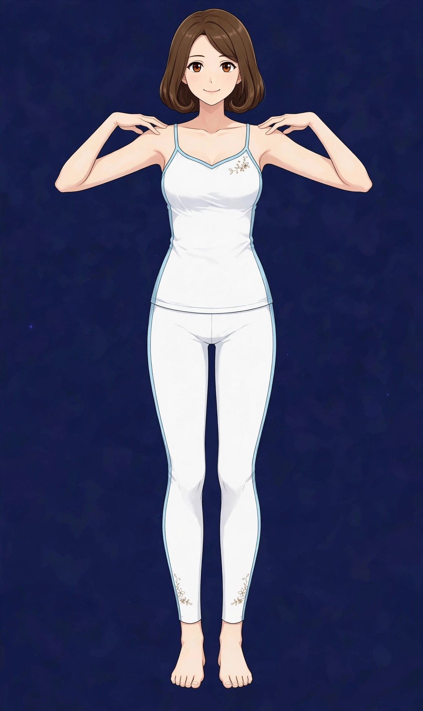
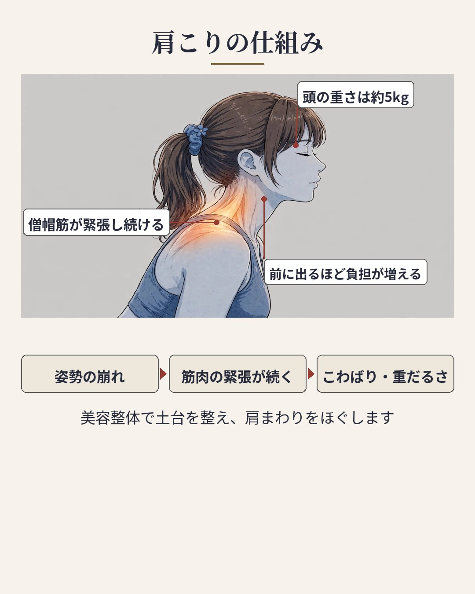

梅田で肩こりケア｜デスクワークの肩の張りに深圧オイルマッサージ疲労・張り

一日中パソコンやスマートフォンに向かっていると、肩まわりは同じ姿勢のまま固まりやすくなります。「夕方になると肩が重い」「肩を回すとゴリゴリする」という方は、梅田でも特に多くご相談いただくお悩みです。このページでは、肩こりがどんな状態か、つながりやすい要因、東洋医学から見た考え方と、ご自宅でできるセルフケアを一般的な健康情報としてまとめました。当店の施術では、表面をなでるだけでは届かない奥の張りに深い圧でアプローチし、施術のあとに肩の軽さを感じていただくことを目指しています。
肩こりとはどんな状態か
肩こりは病名ではなく、首から肩、背中にかけての張り・重さ・だるさをまとめて表す言葉です。頭の重さは体重のおよそ1割ほどとされ、その重さを細い首と肩まわりの筋肉が一日中支えています。顔が前に出る姿勢になるほど負担は大きくなり、緊張が続くと血の巡りも滞りやすくなるため、重さや張りを感じやすくなると一般に説明されています。
朝は軽くても夕方に重くなる方が多いのは、負担が少しずつ積み重なるためです。「その日の疲れを、その日のうちにいったんリセットする」ことが、肩こりと付き合ううえでの基本の考え方です。
こんなサインはありませんか？ — 肩こりのチェックリスト
- 夕方になると肩が重く感じる
- 肩を回すとゴリゴリと音がする
- デスクワークやスマホ時間が長い
- マッサージを受けてもすぐ戻る気がする
- 首を後ろに倒したり、横に倒したりしにくい
- 肩に触れると、板のように硬く感じる
- 目の疲れや頭の重さを感じる日が多い
- 冷房の効いた場所にいると、肩が余計に張る気がする
当てはまる項目が多いほど、負担がたまりやすい生活が続いている可能性があります。次の「要因」と見比べて、どこに負担が集まっているか確かめてみてください。
肩こりにつながりやすい要因

- 姿勢と、長時間の同じ体勢：背中が丸まり顔が前に出た姿勢では、頭を支える首から肩の筋肉が働き続け、緊張が抜けにくくなります。
- デスクワークと画面作業：画面に集中すると肩に力が入ったまま固まりがちです。キーボードやマウスが遠いと、腕の重さも肩にかかり続けます。
- スマートフォンの使用：うつむく姿勢は、頭が前にずれる分だけ首・肩への負担が増えます。短時間でも回数が積み重なると負担になります。
- 冷え：体が冷えると血の巡りが滞りやすく、筋肉もこわばりやすくなります。首元が冷気に当たる場面も一因とされます。
- 目の疲れ：目を使い続けると、首の後ろから肩にかけての緊張とつながりやすいとされます。夕方の肩の重さと重なる方は少なくありません。
- ストレスと睡眠：緊張が続くと無意識に肩が上がりやすくなります。眠りが浅い日は回復が追いつかず、翌朝から張ることもあります。
図1｜肩まわりの主な筋肉（背面）

東洋医学から見た考え方
東洋医学では、肩まわりは気や血の巡りの要所のひとつとされます。同じ姿勢が続くと巡りが滞り、張りや重さとして感じやすくなると考えられています。寒さや目の使い過ぎも、首から肩の緊張とつながりやすい要素です。
肩まわりには、いくつかの経絡（気や血の通り道とされるライン）が通っています。体の側面を巡る胆経、肩甲骨の上を通る小腸経、腕の外側から肩へ向かう三焦経、背中を縦に走る膀胱経などです。張りが出ている場所だけでなく、つながりのあるライン全体を見ながら整えていくのが、東洋医学の見立てに基づく施術の考え方です。
肩まわりの代表的なツボ
ツボ（経穴）は、経絡の上にある要所とされる点です。ご自宅では、指の腹で「気持ちよい」と感じる強さを目安に、5秒ほど押してゆっくり離す、を数回繰り返すのが基本です。痛みが増す場合は中止してください。
図2｜肩まわりのツボの位置（背面）
おすすめ施術
オイルマッサージ
首から肩、肩甲骨まわりをオイルで丁寧にほぐし、深い圧で奥の張りにアプローチします。腕や手の疲れまで合わせてほぐすことで、肩全体の軽さを目指します。
進め方は、まず表面を温めながら広くほぐし、筋肉がゆるんできたところで張りの強い部分へ深い圧を重ねていく流れです。圧は「痛いけれど気持ちいい」の手前を目安に、その都度お声がけしながら調整します。強い圧が苦手な方も遠慮なくお伝えください。
肩の張りが姿勢の崩れと重なっている場合は、美容整体との組み合わせもご提案しています。胸まわりが開いて肩の位置が整うと、張りの戻り方も変わってきます。当日は気になる場所をうかがってから施術を組み立てます。
自宅でできるセルフケア
セルフケアは「長く・強く」より「短く・こまめに」が基本です。痛みやしびれが出る場合は無理をせず中止し、続く場合は医療機関にご相談ください。
- 1．胸を開くストレッチ両手を後ろで組み、肩甲骨を寄せながら胸を張って10秒キープ、を3回ほど。巻き肩気味の姿勢をリセットする動きで、デスクワークの合間にも取り入れやすい方法です。
- 2．肩甲骨回し両手の指先を肩に置き、肘で大きな円を描くように前回し・後ろ回しを各5回ずつ。肩甲骨が背中の上を滑るイメージで、呼吸を止めずにゆっくり行います。
- 3．首のストレッチ背筋を伸ばして座り、右手を頭の左側に軽く添え、息を吐きながら頭を右へゆっくり倒して15秒キープ。引っ張るのではなく手の重さを添えるだけにし、反対側も同様に行います。
- 4．温める温めた蒸しタオルを首の付け根から肩にかけて3〜5分のせます。入浴はシャワーで済ませず湯船につかる日を作ることも、巡りの切り替えになります。
図3｜セルフケア「肩甲骨回し」の手順
動画で見るセルフケア
このページのセルフケアは、動画でも紹介しています。動きの流れを確認しながら、無理のない範囲でどうぞ。
場面別の注意
デスクワーク中
1時間に一度は立ち上がり、肩を大きく回すだけでも緊張の積み重なり方が変わります。画面は目線がやや下向きになる高さに、キーボードは肘が自然に曲がる位置に置くのが目安です。
スマートフォンを使うとき
うつむく角度が深くなるほど、首と肩への負担は増えます。スマホを目線の高さに近づける、長時間の操作は区切って休憩を挟む、といった工夫をしてみてください。
季節の変わり目
気温差の大きい時期や冷房の強い季節は、首元から冷えやすく、肩の張りを感じやすい時期です。首元を覆える羽織ものやストールを手元に置いてみてください。
受診の目安
次のような場合は、サロンでのケアの前に医療機関への受診をおすすめします。
- 強い痛みが続く、または日に日に強くなる
- 腕や手にしびれがある、力が入りにくい
- 発熱を伴っている
- 転倒や事故のあとから痛みが出た
- 安静にしていても楽にならない
当店は医療機関ではなく、診断は行いません。迷うときは、まずかかりつけの医療機関にご相談ください。
よくある質問
Q．初めてでも大丈夫ですか？
はい。施術の前に、気になる場所や圧の好みをうかがってから内容を組み立てます。強い圧が不安な方は、その旨をお伝えいただければ調整します。
Q．施術中に圧が強い・弱いと感じたら？
その場で遠慮なくお声がけください。圧は途中でいつでも調整できます。
Q．どのくらいのペースで通うのがよいですか？
決まった正解はありません。張りがたまりきる前に整える方も、月1回のリセットとして使われる方もいます。ご自身の生活リズムに合わせてご利用ください。
Q．肩以外の場所も相談できますか？
はい。首・背中・目など、肩とつながりの深いお悩みは下の関連ページでも紹介しています。当日に気になる場所をお聞かせいただければ、90分の枠の中で配分を調整します。
関連するお悩みページ
関連する経絡ページ
ご予約
ステラポラリス（大阪・梅田／女性専用）｜オイルマッサージ 90分 10,000円｜月〜土 17:00〜22:00・完全予約制・中崎町駅徒歩5分
ご予約はLINE公式アカウントで受け付けています。希望の日時と、気になる場所（肩こりなど）を送ってください。
さらに学びたい方へ：現場で使われる専門書（PR）
このページのテーマに合わせて選んだ本と、当店の施術でも参考にしている専門書です。


※本ブロックのリンクはAmazonアソシエイト・プログラムおよび楽天アフィリエイトによる広告リンクです。使用感の保証をするものではありません。